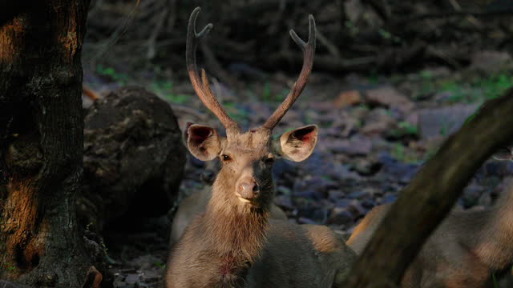

Sri Lanka is home to about 21 species of endemic mammals, 26 species of birds, 113 species of reptiles, 112 species of amphibians, 50 species of fish and numerous insect species including 24 species of endemic butterflies such as Mycalesis rama and Elymnias singhala. Some of the common endemic animals that can be observed are:
With herds of elephants, wild buffalos, sambars and spotted deer, and giant squirrels, this Sri Lankan national park is one of the nation's finest. In fact, for elephant watching, Uda Walawe often surpasses many of the most famous East African national parks. The park, which centres on the 308.2-sq-km Uda Walawe Reservoir, is lightly vegetated, but it has a stark beauty, and the lack of dense vegetation makes game watching easy.
Horton Plains is a beautiful, stark world with excellent hikes in the shadows of Sri Lanka’s second- and third-highest mountains, Kirigalpotta (2395m) and Totapola (2357m). The ‘plains’ form an undulating plateau over 2000m high, covered by wild grasslands and interspersed with patches of thick forest, rocky outcrops, filigree waterfalls and misty lakes. The surprising diversity of the landscape is matched by the wide variety of wildlife, although many of the larger animals are very elusive. Birdwatchers will be well rewarded.


| Name | Fun Fact | Image |
|---|---|---|
| Asian Elephant | Asian elephants have only one 'finger' at the tip of their trunk. |  |
| Sloth bear | Sloth bears' nostrils can close completely |  |
| Sambar deer | Sambar deer are regular grazers as their teeth are perfectly designed for this. |  |